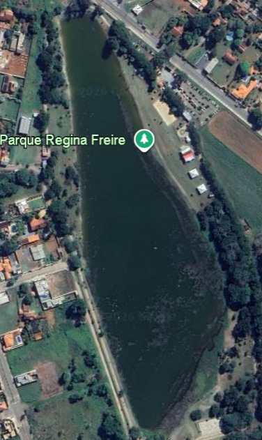

1
Localização da Amostra
👉 Toque no mapa no ponto da lagoa onde a amostra está sendo coletada:

Coleta
Fila de Armazenamento Local
Coletas salvas neste dispositivo aguardando sincronizaçãoNenhuma coleta pendente no armazenamento local. Todos os dados estão sincronizados!